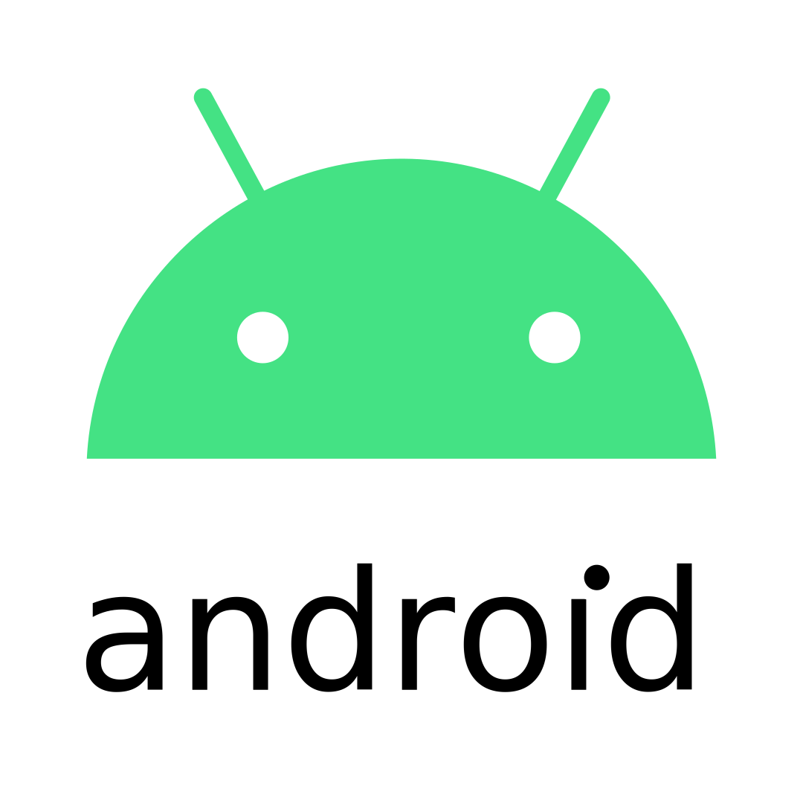
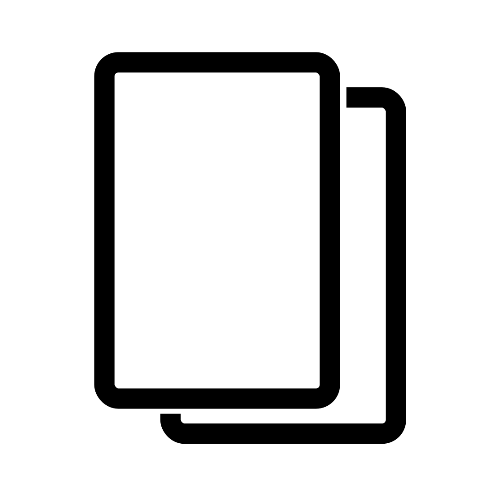
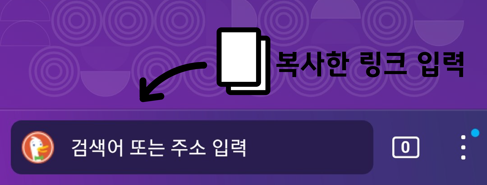
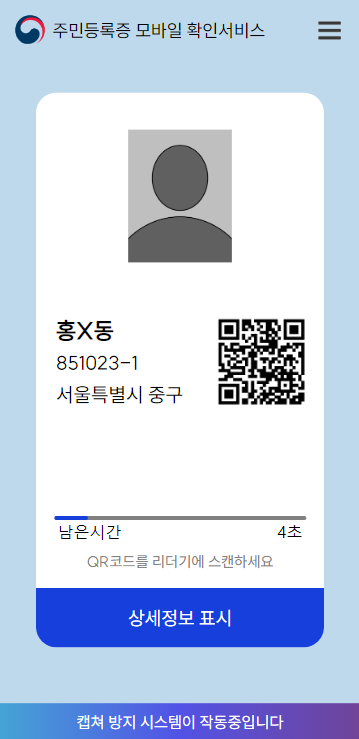

위조 모바일 민증 만들기
더보기
더보기

토르 브라우저 다운
토르 브라우저 다운

링크복사하기

토르 브라우저를 사용하는 방법은 보안성이 강력하며 토르브라우저의 주소입력창에 복사한 링크를 붙여넣고 사용하십시오
HTMl 파일을 사용하기 때문에 간편하며 토르 브라우저가 아닌 타 브라우저를 사용해도 무방하고 사용 브라우저의 창 최대화(전체화면)을 활성화하고 사용하십시오
실제같은 인터페이스
실제 페이지와 분간가지않는 완벽한 인터페이스 구현
타이머,QR다시 표시,상세정보 심지어 QR이 인식되었을때
이동하는 페이지까지 구현하였습니다.

QR인식 화면 보러가기
개인정보 걱정없이
이용하세요
실제 개인정보가아닌 희망 정보를 입력하기 때문에
개인정보가 유출되지 않으며 안전한 토르 브라우저를
사용하기 때문에 기타 위험에서 부터도 안전합니다.
더보기
더보기